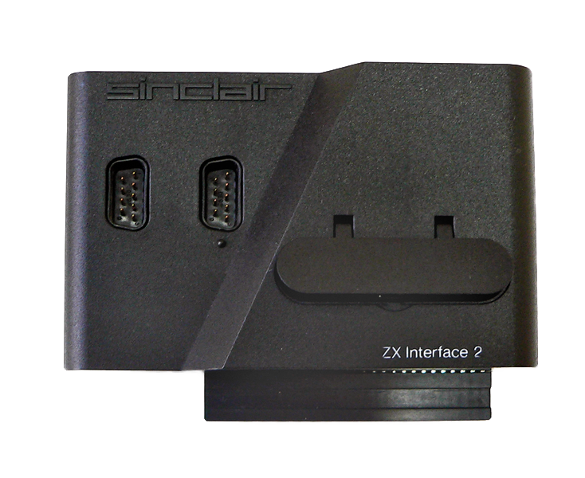

Poprzez złącze krawędziowe do komputera ZX Spectrum można było podłączyć urządzenia peryferyjne,
Jako pamięć zewnętrzną zastosować można było ZX Microdrive – szybką pamięć masową przechowującą około 90 kB danych na zapętlonej taśmie magnetycznej o szerokości 1,9 mm przechowywanej
w nietypowych mikrokasetach.
Występowały także inne urządzenia peryferyjne m.in.
ZX Interface 1 – opracowane w roku 1983 rozszerzenie dodające obsługę do 8 napędów ZX Microdrive, sieci i RS232
ZX Interface 2 – również wprowadzone w roku 1983 i sprzedawane w cenie 19,95 funtów rozszerzenie o obsługę dwóch joysticków i kartridże o pojemności do 16 kB.
ZX Printer – mała drukarka iskrowa angielskiej firmy Sinclair zaprojektowana specjalnie dla komputera ZX-81, wprowadzona do sprzedaży w listopadzie 1981. Mogła być również używana przez późniejszy ZX Spectrum i wcześniejszy ZX-80 (jednak w przypadku ZX-80 wymagany była wymiana pamięci ROM).
Na rynku dostępne też były dodatkowe cartridge do przyłączania stacji dyskietek, rozszerzania BASIC-a (np. Mega Basic, Beta Basic) itp.

^ ZX Interface 1 ^

^ ZX Interface 2 ^
^ ZX Microdrive ^
^ ZX Printer ^